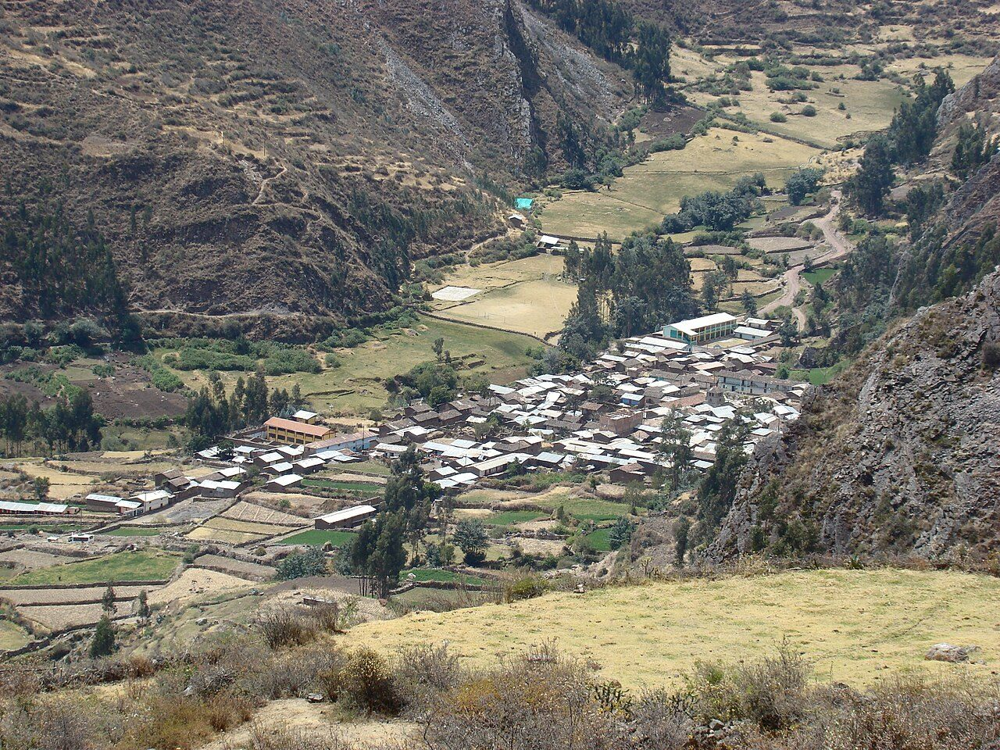
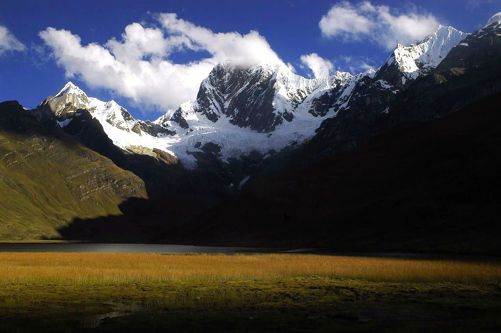
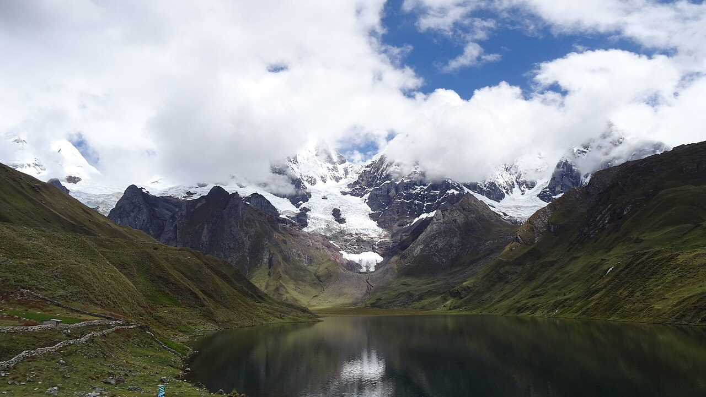
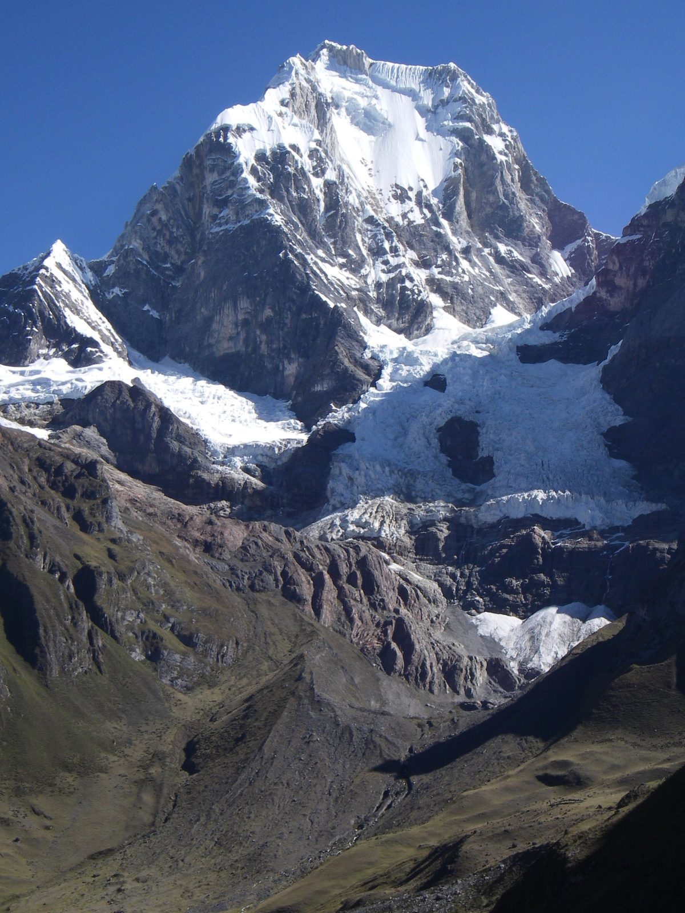
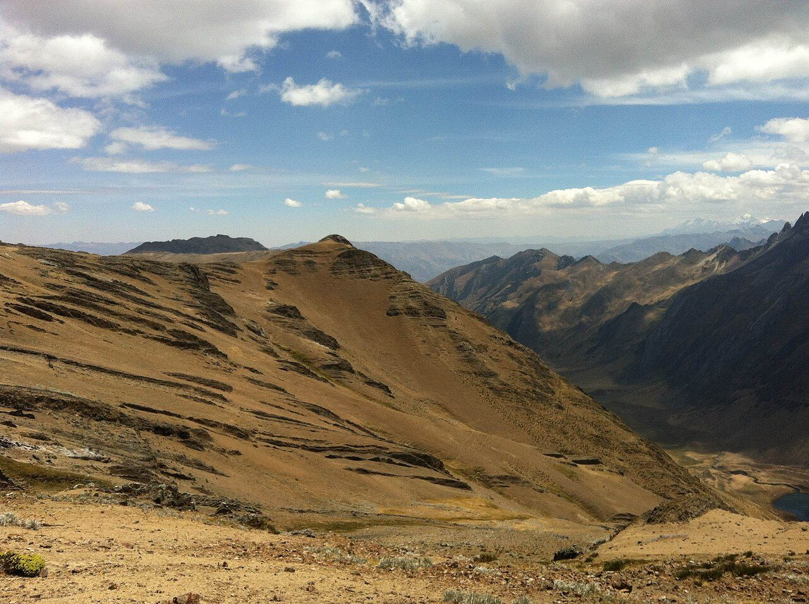
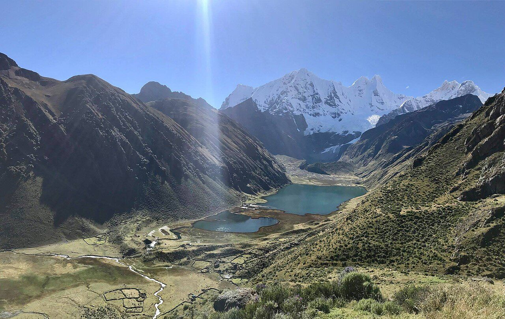

Cordillera Huayhuash Circuit
A high, wild loop around Peru's most savage ice giants.
Cordillera Huayhuash Circuit runs 130 km through Peru and finishes at Llámac. The first landmark is Llámac. At 5,000 steps a day it's about 5 weeks of the walking you do anyway. All 18 landmarks are below, in walking order, with a photograph and the story of the place.
- 130km end to end
- 18landmarks
- 5 weeksat 5,000 steps a day
- Llámacfinishes at

The landmarks of Cordillera Huayhuash Circuit
18 landmarks, in walking order. Each photograph is by the person credited beneath it, used as they licensed it.
-

Photo: Martin Roca · Wikimedia Commons, CC BY-SA 3.0 Llámac
Adobe houses and eucalyptus smoke mark the last road-head before the ice. At 3,300 metres, Llámac gathers arrieros and mules for the loop ahead — a circuit that rarely sinks below four thousand and never once forgets it. Beyond the first ridge waits the Cordillera Huayhuash, compact and merciless, one of the most concentrated ranges in the Andes.
-
Cuartelhuain
Past the mining hamlet of Pocpa, the track narrows to a grassy meadow where the real walking begins. Cuartelhuain sits at 4,170 metres, a cold first camp beneath crumbling red cliffs. Mules graze; porters brew coca tea against the chill. The first pass climbs steeply above, its thin air a warning of the days to come.
-
Cacananpunta Pass
Cacananpunta, the loop's first pass, crests near 4,700 metres on the continental divide. From the saddle the watersheds split — the eastern slope draining to the Marañón and the Amazon, the western to the Pacific. Wind funnels through the notch. Below, the Mitucocha valley opens green and cradled, a first true glimpse of the range's eastern flank.
-

Photo: Paulo Tomaz · Wikimedia Commons, CC BY-SA 2.0 Laguna Mitucocha
Turquoise water lies flat beneath Jirishanca's fluted spire, a 6,094-metre fang the arrieros call the Hummingbird's Beak. Camp scatters across the shore grass. Trout rise at dusk; ice cracks somewhere high on the wall. This is the quiet before the circuit's great reveal — the three-lake balcony still two passes distant.
-
Punta Carhuac
Switchbacking up from Mitucocha, the trail tops out at Punta Carhuac, roughly 4,650 metres. Condors ride the thermals here, wingtips splayed and motionless against the blue. The descent that follows is the one every trekker remembers — dropping steadily toward Carhuacocha, where the giants finally stand unhidden.
-

Photo: Gato Expedicionario 1883 · Wikimedia Commons, CC BY-SA 4.0 Laguna Carhuacocha
Carhuacocha holds the view the whole range is famous for: Yerupajá, Peru's second-highest peak at 6,635 metres, mirrored beside Siula Grande and Jirishanca across three stepped lakes. Reflections hold at dawn before the wind stirs them awake. Few mountain scenes anywhere are this concentrated, three giants and three lakes stacked in a single frame.
-
Siula Pass
The day's grind threads past the Tres Lagunas, strung like beads of glacial melt beneath the ice. Siula Punta tops out around 4,830 metres. Somewhere on the far wall of Siula Grande, Joe Simpson crawled broken for days in 'Touching the Void'. The peak looks no more forgiving now than it did to him then.
-

Photo: Thom95 at German Wikipedia · Wikipedia, CC BY-SA 3.0 Huayhuash
A scatter of stone corrals here shares its name with the whole range. Huayhuash camp rests in a broad pampa near 4,330 metres, mules loosed to graze the spongy bofedal marsh. Evening light turns the eastern faces amber, then rose, then iron. Tomorrow the trail bends south and climbs toward Trapecio, one of the loop's highest crossings.
-
Trapecio Pass
Thin air and loose scree mark the pull to Trapecio, a saddle brushing 5,000 metres beneath its trapezoid peak. Every step becomes a lungful bargained for. Small glacial tarns glint in the hollows below, hard and blue. From the crest the route swings west, leaving the eastern valleys for the wild southern rim.
-
Laguna Viconga
After the high cold comes an unlikely reward: natural hot springs steam beside Laguna Viconga at around 4,400 metres. The reservoir mirrors the peaks, its water dammed and piped to distant coastal farms. Bathers soak in the heat after days above four thousand metres, the springs a rare warm break on a cold, high circuit.
-
Punta Cuyoc
The loop's stiffest climb tops out at Punta Cuyoc, a scree saddle near 5,000 metres and the highest point on the whole circuit. Glaciers tilt the horizon on every side. Behind lies the eastern chain; ahead, a valley plunging toward Huayllapa. Few Andean passes pack this much into such raw, thin-aired effort.
-
San Antonio Viewpoint
A short, brutal detour above the Cuyoc saddle climbs to the San Antonio viewpoint at roughly 5,000 metres — for many the finest panorama of the trek. The Sarapo and Jurau glaciers spill toward a black tarn far below. Loose rock makes the descent a careful, sliding scramble on tired legs.
-
Huayllapa
Down and down, the circuit's only real village drops into a warm river valley. Huayllapa, near 3,500 metres, keeps tiendas selling warm soda and biscuits — luxuries after days above the tree-limit. Chickens scratch the lanes; the río rushes below the last houses. From here the trail climbs hard again toward Tapush.
-
Tapush Pass
From Huayllapa the trail claws back every metre it surrendered, grinding to Tapush pass near 4,800 metres. Cushion plants hug the ground where nothing taller survives the wind. The snow dome of Diablo Mudo rises off to one side. The high country closes in again for the loop's final act.
-

Photo: TMbux · Wikimedia Commons, CC BY-SA 3.0 Yaucha Pass
One more saddle before the long descent home: Yaucha, close to 4,800 metres, opens the last great view of the western giants. Rondoy and Jirishanca crowd the skyline, sharp as broken glass. In the green basin below waits the lake that closes the circuit's beauty. Downhill, at last, toward Jahuacocha.
-

Photo: Rafael Roque Chirinos · Wikimedia Commons, CC BY-SA 4.0 Laguna Jahuacocha
Loveliest camp of the whole loop: Jahuacocha, at 4,050 metres, its still water holding Rondoy, Jirishanca and Yerupajá upside down each dawn. Fires of gnarled queñua wood glow against the cold. Many trekkers linger a full day here, unwilling to break the spell of the western wall reflected whole.
-
Pampa Llámac Pass
One final climb stands before the road. The Pampa Llámac pass, around 4,300 metres, grants a last backward look at the whole circled arc — Yerupajá, Siula, Jirishanca, Rondoy laid bare in a single sweep. From the crest the trail tips down through cactus toward the valley floor, the high peaks falling away behind for good.
-
Llámac
Eucalyptus smoke again, dogs barking, the dusty plaza where mules are unloaded and boots come off at last. Back in Llámac at 3,300 metres the loop draws shut — 130 kilometres and a dozen thin-aired passes, not one of them kind. It closes on a different valley than it opened, the full savage arc of the Cordillera Huayhuash circled and left behind.
Walking the Cordillera Huayhuash Circuit
Your watch is already counting these steps. Watch Walks spends them on the Cordillera Huayhuash Circuit, all 130 km of it, and hands you each landmark as you reach it. There's no route recording, no account and no ads. The Inca Trail is free; this one is a one-time purchase with no subscription.
Other trails in South America
- Inca Trail 43 km · Peru
- Inca Road 810 km · Peru
- Alpamayo Circuit 64 km · Peru
- Torres del Paine (O Circuit) 130 km · Chile